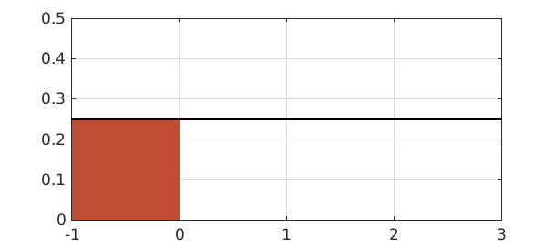
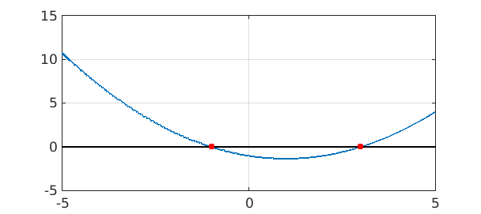
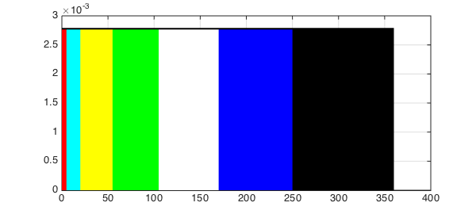
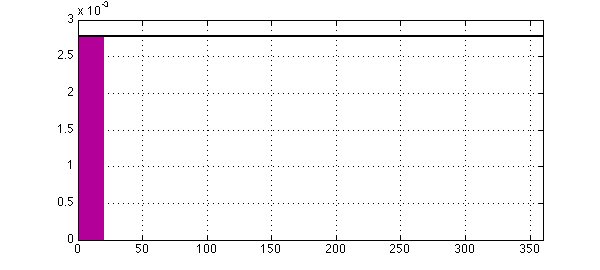
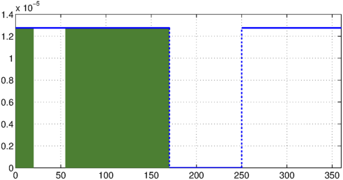

1. Introduction
Probability and statistics textbooks contain many exercise problems concerning various probability distributions. In this Example we use Chebfun to solve two problems involving the uniform distribution from the textbook [1]. The domain is a finite interval. Other similar Examples look at problems from the same book involving the normal, beta, exponential, gamma, Rayleigh, and Maxwell distributions.
Like most textbooks, [1] emphasizes problems that can be solved on paper and don't need numerical tools such as Chebfun. As soon as one varies the problem a little, however, numerical solutions often become necessary. Thus first we solve the problems as written, and then we show an application.
2. Problem 1(c), page 124
If $X$ is uniformly distributed over $(1,2)$, find $z$ such that $P[X>z+\mu_x]=1/4$.
We first define the probability density function (PDF) of $X$ as follows:
f = chebfun(@(x) 1/(2-1)+0*x, [1 2]);
The cumulative density function (CDF) of $X$ is the indefinite integral of $f$:
fint = cumsum(f);
We can compute the mean of $X$, denoted $\mu_x$, like this:
format long mu_x = sum(chebfun(@(x) x.*f(x), [1 2]))
mu_x = 1.500000000000000
This is obviously correct.
Let $a = z+\mu_x$. Since $P[X>a] = 1/4$, we can find $a$ like this:
a = roots(1-fint-1/4)
a = 1.750000000000000
Then we know the value of $z$:
z = a-mu_x
z = 0.250000000000000
We now plot the PDF of this uniform distribution and the probability $P[X>z+\mu_x] = 1/4$:
hold off, h = area(f{a, 2});
set(h,'FaceColor',[0.3 0.2 0.5]), xlim([1 2]), ylim([0, 2])
LW = 'linewidth';
hold on, plot(f,'k',LW,2), grid on
3. Problem 1(m), page 124
Suppose $X$ is a continuous random variable with uniform distribution having mean $1$ and variance $4/3$. What is $P[X<0]$?
The probability density function (PDF) of the uniform distribution can be defined like this: $f = 1/(b-a)$ for $x \in (a,b)$.
Then the mean is $(a+b)/2$ and the variance is $(b-a)^2/12$. We want to solve for $a$ and $b$ given the stated conditions on the mean and variance.
One approach would be to use Chebfun2. We can do that like this:
mean = 1; var = 4/3;
Let us assume that the roots are within a square of side length $10$ centered at the origin
f = chebfun2( @(a,b) (a+b)/2 - mean, [-5,5,-5,5] ); g = chebfun2( @(a,b) (b-a).^2/12 - var, [-5,5,-5,5] );
The common roots of $f$ and $g$ are the points where the mean and the variance attain the desired values.
r = roots( f, g )
r = -1.000000000000000 3.000000000000000 3.000000000000000 -1.000000000000000
We then get two pairs of values for $a$ and $b$. Since $a < b$, we can easily make the right choice of the $(a,b)$ pair and discard the other one. As we can see $a = -1$ and $b = 3$ are the correct choices.
a = min(r(2,:)) b = max(r(2,:))
a = -1.000000000000000 b = 3.000000000000000
Now we have the PDF of $X$ as follows:
f = chebfun(@(x)0*x + 1/(b-a),[a, b]);
The cumulative density function (CDF) is the indefinite integral of $f$:
fint = cumsum(f);
$P[X<0]$ is this integral evaluated at $0$:
p = fint(0)
p = 0.250000000000000
Let us plot $f$ on the interval $[a, b]$ and the region $x<0$.
hold off, h = area(f{a, 0});
set(h,'FaceColor',[0.75 0.3 0.2]), xlim([a, b]), ylim([0, 0.5])
LW = 'linewidth';
hold on, plot(f,'k',LW,1.6), grid on

Alternatively, let us find $a$ and $b$ with Chebfun. One approach is to eliminate $b$ by hand and then use Chebfun's roots command to find $a$.
We express $b$ in terms of $a$ according to $mean = (a+b)/2 = 1$:
b = @(a) 2-a
b =
@(a)2-a
By $variance = (b-a)^2/12 = 4/3$, we can try $a$ in the interval $[-5,5]$ to see if we get a root for the function $g$ defined as:
g = chebfun(@(a) (b(a)-a).^2/12 -4/3, [-5,5]); aa = roots(g)
aa = -1.000000000000000 2.999999999999998
As before, we can see $a = -1$ and $b = 3$ are the correct choices.
a = aa(1) b = aa(2)
a =
-1
b =
2.999999999999998
Let us plot $f$ on the interval $[-5,5]$, the two roots $a$ and $b$:
hold off, plot(g, LW, 2), hold on, plot([-5,5],[0,0], '-k'), axis auto plot(aa, g(a), 'r.', 'markersize', 20) grid on

Another Chebfun approach would be to solve for both $a$ and $b$ using Chebfun2.
Let us define the mean of the distribution like this:
meanab = chebfun2(@(a, b) (a+b)/2, [-5, 5, -5, 5]);
Similarly, we can define the variance like this:
varab = chebfun2(@(a, b) (b-a).^2/12, [-5, 5, -5, 5]);
We can solve for $a$ and $b$ simultaneously as follows:
ab = roots(meanab-1, varab-4/3)
ab = -0.999999999999998 3.000000000000003 2.999999999999998 -0.999999999999996
As there are two pairs of $a$ and $b$ listed in ab, we need to identify the correct pair:
a = ab(1, 2) b = ab(1, 1)
a = 3.000000000000003 b = -0.999999999999998
4. Application adapted from Example 12, page 107
In a lottery draw, we let a participant spin a wheel and allow it to come to rest. The wheel is partitioned into ordered sectors: red ($5^\circ$), cyan ($15^\circ$), yellow ($35^\circ$), green ($50^\circ$), white ($65^\circ$), blue ($80^\circ$), black ($110^\circ$). Each color represents a prize. When the wheel comes to rest, a fixed arrow on the circumference points to a color. The participant then receives the prize that the corresponding color stands for. We can see that the point on the circumference of the wheel that is located opposite the fixed arrow could be considered as the value of a random variable $X$ that is uniformly distributed over the circumference of the wheel.
(Q1) What is the probability of a participant receiving a prize represented by red or cyan?
The PDF of $X$ can be defined like this:
f = chebfun(@(x) 1/(360-0)+0*x, [0 360]);
Let us plot the composition of the wheel:
FC = 'Facecolor';
hold off, h1 = area(f{0, 5}); set(h1,FC,[1 0 0]), axis auto
hold on, h2 = area(f{5, 20}); set(h2,FC,[0 1 1]),
h3 = area(f{20, 55}); set(h3,FC,[1 1 0]),
h4 = area(f{55, 105}); set(h4,FC,[0 1 0]),
h5 = area(f{105, 170}); set(h5,FC,[1 1 1]),
h6 = area(f{170, 250}); set(h6,FC,[0 0 1]),
h7 = area(f{250, 360}); set(h7,FC,[0 0 0]),
plot(f,'k',LW,2), grid on

The CDF of $X$ is thus:
fint = cumsum(f);
We can compute the probability of $0<X<(5+15)$ like this:
p1 = fint(5+15)
p1 = 0.055555555555556
Let us compare p1 to the exact value obtained by simple algebra:
p1_exact = (5+15)/360
p1_exact = 0.055555555555556
Now we plot the probability:
hold off, plot(f,'k',LW,2), grid on
hold on, h = area(f{0, 20}); set(h,FC,[0.7 0 0.6]),
xlim([0 360])

(Q2) We now know that the arrow will not point to the blue region when the wheel comes to rest. Under this condition, what is the probability that it will point to neither black nor yellow?
Because $X$ is uniformly distributed, the probability of the arrow not pointing to the blue region is:
pnb = 1-fint(80)
pnb = 0.777777777777778
Similarly, the probability of the arrow not pointing to either the yellow or black region is:
pnyb = 1-fint(35)-fint(110)
pnyb = 0.597222222222222
So the probability of the arrow not pointing to any of yellow, black, or blue is:
pn = pnyb-fint(80)
pn = 0.375000000000000
By Bayes' Theorem, the conditional probability can be computed as follows:
p2 = pn/pnb
p2 = 0.482142857142857
As before, we can compare p2 to the exact value of the conditional probability obtained by simple algebra:
p2_exact = (1-(35+110+80)/360)/(1-80/360)
p2_exact = 0.482142857142857
Now let us plot the conditional probability:
g= f/(280/360);
g = g.*chebfun({g,0,g}, [0, 170, 250, 360]);
hold off, h1 = area(g{0, 20}); set(h1,FC,[0.3 0.5 0.2]),
hold on, h2 = area(g{55, 170}); set(h2,FC,[0.3 0.5 0.2]),
plot(g,'b',LW,2), xlim([0 360]), grid on

References
- A. M. Mood, F. A. Graybill, and D. Boes, Introduction to the Theory of Statistics, McGraw-Hill, 1974.